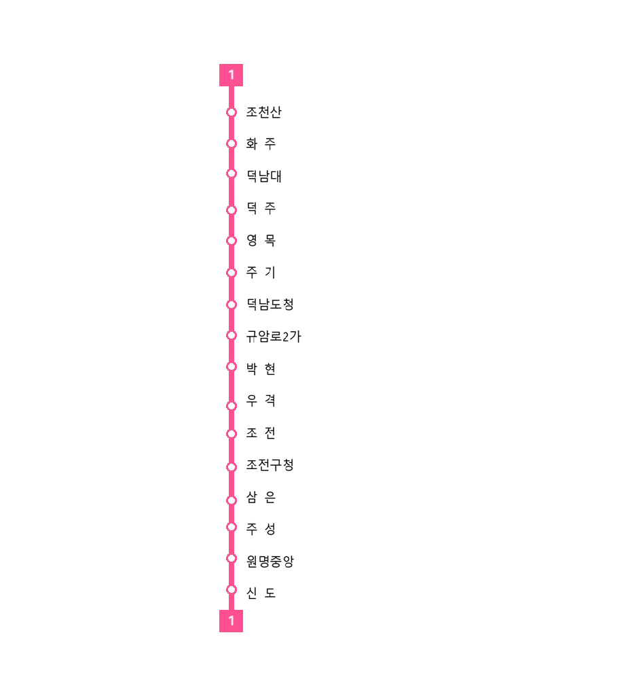

|
1
Deokju Metro Line 1 |
|
|
 |
|
| 노선 정보 | |
|---|---|
| 노선 색상 | ■ 핫핑크 (Hot Pink) |
| 운영 기관 | 덕주도시철도공사 |
| 개통일 | 2023년 7월 7일 |
| 기점 | 조천산역 |
| 종점 | 신도역 |
| 역 수 | 16개 |
| 거리 | 19.21km |
| 시스템 | 경전철 (고무차륜 AGT) |
| 구성 | 3량 1편성 |
| 차량 | 1000호대 (D1000) |
| 차량기지 | 원명차량사업소 |
| 공식 마스코트 | 이덕희 |
"덕빈남도의 심장, 덕주시를 가로지르는 분홍빛 활력"
덕빈남도의 도청 소재지이자 인구 51만 명의 중견 도시인 덕주시를 운행하는 도시철도 노선이다. 노선 색상은 눈에 확 띄다 못해 강렬하게 시신경을 강타하는 핫핑크(#FF4F91)이다. 누가 봐도 니코니코니
2023년 7월 7일 전 구간이 성공적으로 개통되었다. 당초 버스 노선 개편만으로 수요를 충당하려 했으나, 조전구 신도시 개발과 원명읍 일대의 아파트 단지가 폭발적으로 팽창하면서 교통 체증이 지옥도를 연상케 하자 전격적으로 경전철(LRT) 사업이 추진되었다.
현재 덕주시의 구도심인 덕산구, 신흥 주거지인 조전구, 거대 베드타운인 원명읍을 'ㄷ'자 형태 혹은 동서로 완벽하게 관통하고 있으며 덕남대, 덕주시청(주기), 덕남도청, 조전구청 등 핵심 행정 및 교육 인프라를 죄다 훑고 지나가기 때문에 출퇴근 및 통학 수요가 상상을 초월한다.
인구 50만 도시의 경전철 치고는 이례적으로 흑자를 내고 있는 효자 노선이기도 하다.[1] 한때 석형준 전 덕빈남도지사가 "적자 노선이니 당장 폐선해라"라며 어처구니없는 생떼와 탄압을 부린 흑역사가 있으나, 도민들의 심판으로 그가 쫓겨나며 노선과 마스코트 모두 무사히 지켜졌다.
| 역번호 | 역명 | 한자 역명 | 거리(km) | 접속 노선 | 소재지 |
|---|---|---|---|---|---|
| D101 | 조천산 | 鳥天山 | 0.0 | - | 덕주시 덕산구 |
| D102 | 화 주 | 花 州 | 1.70 | - | |
| D103 | 덕남대 | 德南大 | 2.68 | - | |
| D104 | 덕 주 | 德 州 | 3.69 |
KTX
덕빈선
매덕
매덕선
|
|
| D105 | 영 목 | 永 木 | 4.56 | - | |
| D106 |
주 기 (덕산구청) |
朱 基 | 5.67 |
|
|
| D107 |
덕남도청 (월로2가) |
德南道廳 | 6.69 | - | |
| D108 | 규암로2가 | 奎岩路2街 | 7.81 | - | 덕주시 조전구 |
| D109 | 박 현 | 朴 峴 | 8.94 |
|
|
| D110 | 우 격 | 牛 格 | 10.25 | - | |
| D111 | 조 전 | 助 田 | 11.26 | - | |
| D112 | 조전구청 | 助田區廳 | 12.01 | - | |
| D113 | 삼 은 | 三 銀 | 13.44 | - | |
| D114 | 주 성 | 酒 城 | 15.00 | - | |
| D115 | 원명중앙 | 元明中央 | 17.32 | - | 덕주시 덕산구 (원명읍) |
| D116 | 신 도 | 新 道 | 19.21 | - |
정확한 안내방송 문장과 표현을 원한다면 차내 안내방송은 안내방송/열차/도시철도를, 역내 안내방송은 안내방송/역을 참고하기 바랍니다.
| 한국어 | 덕주도시철도공사 표준 안내방송 |
|---|---|
| 영어 | Deokju Metro Standard English |
| 중국어 / 일본어 | 덕주역, 도청, 종착역 등 주요 역 송출 |
| BGM | 출발: 핑크빛 발걸음 / 환승: 니코의 왈츠 / 종착: 덕주의 노을 |
차내 안내방송과 승강장 진입 방송은 덕주 1호선의 명예 차장, 이덕희(CV. 박시윤)의 극강 하이텐션 음성으로 송출된다. 평소에는 "덕주 1호선 탑승을 환영합니다! 오늘도 럭키 세븐의 축복이 함께하길~♡" 이라며 애교 섞인 발랄한 톤을 유지하지만, 출퇴근 시간대 혼잡도가 극에 달하거나 출입문에 끼이는 승객이 발생하면 갑자기 에바 2호기 조종사(아스카) 톤이나 까칠한 '나히다' 톤이 불쑥 튀어나온다.
"무리하게 타지 마세요!! 너 바보야?! 다음 열차 금방 오니까 뒤로 물러서!!" 라며 합법적 다그침을 시전하는 방송은 이미 덕주 시민들 사이에서 정신이 번쩍 드는 알람벨 취급을 받고 있다.
환승 BGM인 '니코의 왈츠'는 놀랍게도 러브라이브의 명곡 '니코푸리 여자도(にこぷり♡女子道)'의 전주 부분을 클래식 오르골 버전으로 아슬아슬하게 편곡해 놓은 곡이다. 이 때문에 덕주역 환승 통로에서는 무의식적으로 발을 구르거나 가방에서 펜라이트를 꺼내 켤 뻔하는 오타쿠들의 모습이 자주 목격된다.
더욱 기괴한 것은 일본어 안내방송이다. 일본판 성우인 신도 아마네 특유의 귀여운 톤으로 송출되는데, 종착역 안내방송에서 "오와리데스요~ (끝났어요~)" 라는 특유의 하스노소라 이즈미 톤이 흘러나오면 씹덕 승객들이 그 자리에서 성불(?)하며 열차에서 내리지 못하는 웃지 못할 해프닝이 종종 벌어지곤 한다.
2026년 5월 2일, 덕주 1호선의 상징색인 핫핑크를 테마로 한 공식 마스코트 역무원 이덕희(Lee Deok-hee)가 정식으로 데뷔했다.
개통 초기 진행했던 '니코 트레인' 이벤트의 성공에 힘입어, 1호선 상징색과 완벽히 일치하는 야자와 니코를 동경해 덕주도시철도공사에 입사한 진성 '럽순이'이자 덕산구 토박이라는 독특한 설정으로 대중 앞에 섰다. 나이는 만 22세 (2004년생), 본인의 생일마저 1호선 개통일과 동일한 7월 7일이라 스스로를 '럭키 세븐의 화신'이라 부르며 파견 대학생 역무원(덕남대 철도경영학과 재학) 신분으로 당당하게 근무 중이다.
효빈권 철도 캐릭터 사업의 전통(?)인 한·일 성우 더블 캐스팅이 이덕희에게도 어김없이 적용되었으며, 한·일 성우들의 미친 필모그래피가 캐릭터 세계관을 완전히 집어삼켜 대환장 밈을 양산하고 있다.
✨ 성덕의 끝판왕 (러브라이브! 하스노소라 - 카츠라기 이즈미): 럽순이 설정의 정점이자 성우 본체의 꿈이 이루어진 기적의 캐스팅. 이덕희가 그토록 럽라를 부르짖더니, 성우 본체가 아예 하스노소라의 '카츠라기 이즈미' 역으로 공식 시리즈에 합류해버렸다! 덕분에 덕주 1호선은 니코맘 성지를 넘어 하스노소라 팬들의 새로운 성지순례 코스로 강제 떡상 중이다.
🦋 마시로의 멘탈 붕괴 (BanG Dream! - 쿠라타 마시로): 진상 승객이나 악성 민원에 시달려 멘탈이 바닥나면 뱅드림!의 쿠라타 마시로 톤으로 완전히 돌변한다. 평소의 핫핑크 인싸 텐션은 증발하고 "덕주역... 너무 무서운 곳... 환승객이 나를 다 쳐다보고 있어... 무리무리... 집으로 돌아갈래..."라며 개찰구 구석에 쭈그려 앉아 바들바들 떠는 극강의 개복치 멘탈을 보여준다.
🎭 하극상 밈 (vs 심세이): 덕희는 22세(04년생) 대학생, 창전선 마스코트 심세이는 17세(08년생) 여고생이지만, 일본 성우는 페이튼 나오미(03년생)가 신도 아마네(04년생)보다 선배다. 이 때문에 덕희가 세이만 보면 나이 설정을 모조리 내다 버리고 "세이 언니!! 핡!! 뚜이부치!!"라며 맹렬하게 추격하는 기괴한 세계관 붕괴 하극상이 공식 밈이 되었다.
🍀 지혜의 신의 국밥 먹방 (원신 - 나히다): 한국판 성우가 무려 원신의 풀의 신 '나히다' 역의 박시윤 성우다! 덕분에 덕희가 뚝배기에 다대기를 풀고 깍두기 국물을 들이켤 때마다 "지혜의 신께서 덕산구 뼈해장국에 대한 깊은 깨달음을 얻으셨다", "나히다가 탕후루 대신 국밥을 먹는다"는 미친 크로스오버 드립이 커뮤니티를 완벽하게 장악했다.
🐶 큐어 멍멍이의 일탈 (원더풀 프리큐어! - 큐어 원더풀): 진상 승객이 나타나면 강아지 본능이 깨어나 "덕주역에서 난동 부리지 마라 멍!!" 이라며 네 발로 뛰어다니며 짖을 기세를 보인다.
🍬 달콤한 역무원 (캐치! 티니핑 - 캔디핑): 텐션이 최고조에 달하면 "덕주 1호선 탑승을 환영해 캔디! ...아, 아니 환영합니다!" 라며 어미에 '~캔디'를 붙이는 실수를 저지른다.
🔥 최강 민원 제압 (에반게리온 - 아스카): 덕주역에서 시비를 거는 진상 민원인이 나타나면, 에바 2호기에 타던 성질머리로 빙의하여 "너 바보야?! (안타 바카?!) 지금 여기서 뭐하는 짓이야!!"라고 자비 없이 샤우팅을 지른다.
2026년 5월 초, 덕주 1호선의 공식 마스코트 '이덕희'가 정식 공개되자 당시 도지사였던 석형준은 이를 정치적 핑계 삼아 덕주 1호선 전체를 뒤흔드는 만행을 저질렀다.
그는 덕주도시철도공사 사장을 도청 집무실로 호출해 "어디서 천박한 만화 쪼가리로 세금을 낭비하냐! 적자투성이인 1호선 당장 철거해버리고 그 자리에 내 업적인 BRT나 깔아라!"라며 책상을 내리치고 폭언을 퍼부었다. 게다가 "전직 덕주시장인 김영산(당시 도지사 경쟁 유력 후보) 띄워주려고 선거철에 맞춰서 선거법 위반하는 거 아니냐! 당장 마스코트 철회해!"라며 억지 생떼를 썼다.
하지만 이는 그야말로 코미디였다. 1호선의 소유권과 관할권은 엄연히 '덕주시'에 있었기 때문에 도지사의 폐선 운운은 명백한 권한 남용이자 월권행위였다. 더군다나 덕주 1호선은 인구 50만 도시의 경전철 치고는 이례적으로 흑자를 내거나 적자 폭이 극히 적은 '효자 노선'이었기에, 석형준의 "적자투성이" 발언은 사실관계조차 완전히 틀려먹은 멍청한 망언이었다. 이 소식을 들은 타 지자체 철도 관계자들조차 "이미 흑자 내며 잘 굴러가는 멀쩡한 경전철을 폐선하라는 건 제정신이 아니다"라며 기함했다. 사우나 짓는다고 수천억 슈킹하던 본인이 진짜 선거법 위반 범죄자였다는 건 안비밀
결국 덕주도시철도공사 측이 이 억지를 무시하자, 앙심을 품은 석형준은 타 지역 연계를 위해 도비 30%, 시비 70%로 합의되어 있던 1호선 도비 지원 협약을 일방적으로 파기하고 예산을 전액 삭감해버리는 치졸한 보복을 가했다. 이로 인해 이덕희 굿즈와 관련 행사들이 모조리 동결될 위기에 처했으나, 불과 한 달 뒤 제9회 지방선거에서 석형준이 29.2%의 굴욕적인 득표율로 참패하여 쫓겨났다. 이후 61.5%로 압승하며 도정을 탈환한 김영산 신임 도지사가 취임 직후 삭감되었던 도비 지원금을 즉각 원상복구 시키면서, 덕주 1호선과 이덕희 모두 화려하게 부활할 수 있었다.